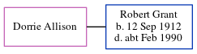

Cressy Peart 1915 - c2000
[ Home ] | [ Calendar ] | [ Surnames Index ] | [ Errors ] | [ Family History ]The eldest of 3 children of Sydney Peart (a locomotive engine driver) and Sara Biggs, Cressy Peart was born in Tynemouth, Tyne and Wear, England on 5 Jan 19151,2.
She died c. Feb 2000 in North Tyneside, Northumberland, England2.
Parents
- Sydney Ralph was born on 6 Mar 1887
- Sara Jane was born on 29 Dec 1889
Citations
- England & Wales births 1837-2006 - Findmypast
- England & Wales deaths 1837-2007 - Findmypast
Media
England & Wales births 1837-2006 - BMD/B/1915/1/AZ/001192/031
England & Wales deaths 1837-2007 - BMD/D/2000/3/83883330
Family Tree
Map
Generated by ged2site. Last updated on Jul 3, 2024
Known Issues
Can't find relationship with the home person
No records of living with anyone
1939 UK register information missing